Práctico 7: Gráficos bivariados en reportes dinámicos
Sesión del lunes, 18 de noviembre de 2024
Objetivo de la práctica
El objetivo de esta guía práctica es introducir a la visualización de datos con R en documentos dinámicos mediante Quarto, considerando las mejores prácticas para comunicar datos y análisis en ciencias sociales.
En detalle, aprenderemos:
Qué es la visualización de datos y cómo comunicarlos a una audiencia de manera eficiente, completa e insesgada.
Visualizar datos bivariados con diferentes librerías, pero principalmente con
ggplot2.
Nota
Si quieres profundizar cómo generar gráficos univariados, visita este práctico de estadística descriptiva 2023.
Recursos de la práctica
En esta práctica trabajaremos con un subconjunto de datos previamente procesados derivados de las encuestas realizadas en diferentes países por el Latin American Public Opinion Proyect (LAPOP) en su ola del 2018. Para este ejercicio, obtendremos directamente esta base desde internet. No obstante, también tienes la opción de acceder a la misma información a través del siguiente enlace: LAPOP 2018. Desde allí, podrás descargar el archivo que contiene el subconjunto procesado de la base de datos LAPOP 2018.
Crear un documento Quarto
Para recordar cómo generar un archivo en Quarto, visitar el práctico 6 del curso.
1. ¿Qué es visualizar datos?
La visualización de datos consiste en dar sentido a filas y columnas de datos, presentándolos en un formato fácilmente comprensible a una audiencia.

Visualizar datos es una de las tareas más recurrentes en estadística, al mismo tiempo que es una de las formas más delicadas de comunicar información. ¿A qué nos referimos? básicamente a que, como investigadores/as, comunicamos nuestros resultados buscando resaltar un aspecto de la realidad e intentando crear un mensaje con los datos. Por ello, es sumamente importante hacerlo de forma fidedigna, sencilla y pensando siempre en cómo la audiencia podría interpretarlo.

Cómo NO visualizar datos
Es bastante común ver malas formas de comunicar datos; en los medios de comunicación, redes sociales e inclusive en la misma investigación acádemica. Esto ocurre por diversos motivos, ya sea por elementos gráficos, de escalas o de orden que engañan al ojo y percepción humana. Algunos ejemplos de cómo no se deben comunicar datos son:
En esta primera imagen vemos un muy mal (intencionado) uso de elementos visuales y escalas para intentar dar un mensaje que no se condice con los mismos datos que expone el gráfico.

En esta segunda imagen el principal error (entre varios) es que los valores del eje x (la abscisa) del gráfico se presentan de mayor a menor… y no de menor a mayor como es usual y comunmente leen las personas.
Algunos principios para visualizar datos
¿Y entonces cómo realizar una buena/correcta visualización de datos? Tengamos como premisa la siguiente cita:
“La excelencia gráfica es la presentación bien diseñada de datos interesantes: una cuestión de sustancia, de estadística y de diseño… [Consiste] en ideas complejas comunicadas con claridad, precisión y eficacia. … [Es] lo que da al espectador el mayor número de ideas en el menor tiempo con la menor tinta en el menor espacio … [Es] casi siempre multivariante … Y la excelencia gráfica requiere decir la verdad sobre los datos”.
Tufte (2001), The Visual Display of Quantitative Information, p. 51
Nota
10 Principios para la visualización de datos
Conoce a tu audiencia ¿Qué preguntas necesitan respuesta?
Utiliza el tipo de gráfico adecuado para representar el tipo de información que se dispone.
La forma sigue a la función. Concéntrate en cómo va a utilizar los datos tu público y deja que eso determine el estilo de presentación.
Proporcione el contexto necesario para que los datos se interpreten y se actúe en consecuencia.
Mantenga la sencillez. Elimine la información no esencial.
Resalte la información más importante
Utilice los colores con prudencia
Utilice cuidadosamente las proporciones para que las diferencias de tamaño en el diseño representen fielmente las diferencias de valor.
Sé escéptico. Pregúntese qué datos no están representados y qué información podría, por tanto, malinterpretarse o perderse.
Muestra la verdad de tus datos, no lo que quisieras creer.
2. Preparación de datos
Comencemos por preparar nuestros datos. Iniciamos cargando las librerías necesarias.
pacman::p_load(tidyverse, # Manipulacion datos
ggplot2, # Gráficos
sjPlot, # Tablas y gráficos
ggpubr, # Gráficos
ggmosaic) # Gráficos
options(scipen = 999) # para desactivar notacion cientifica
rm(list = ls()) # para limpiar el entorno de trabajoCargamos los datos desde internet.
load(url("https://github.com/cursos-metodos-facso/datos-ejemplos/raw/main/lapop_proc_2018.RData")) #Cargar base de datosA continuación, exploramos la base de datos lapop.
names(lapop) # Nombre de columnas [1] "year" "pais" "pais_name" "idnum" "upm"
[6] "strata" "wt" "weight1500" "sexo" "edad"
[11] "educ" "l1" "ideologia_f" "empleo" "decile"
[16] "it1" "prot3" "aoj12" "b2" "b3"
[21] "b4" "b10a" "b12" "b20" "b20a"
[26] "b21" "b21a" "n9" "n11" "n15"
[31] "ros4" "ing4" "eff1" "pn4" "exc7"
[36] "pol1" "vb2" "gini" "gdp" dim(lapop) # Dimensiones[1] 23386 39Contamos con 39 variables (columnas) y 23.386 observaciones (filas).
Realizamos un pequeño procesamiento de datos que nos servirá después.
# Un pequeño procesamiento para algunas variables que usaremos más adelante
lapop <- lapop %>% mutate(across(c("gini", "gdp"), ~ as.numeric(.))) 3. Analizar la forma de distribución
Antes de visualizar los datos, es crucial conocer el nivel de medición de nuestras variables y analizar la forma de su distribución. En esta guía utilizaremos las siguientes variables del subset de LAPOP 2018:
- país [
pais]: nominal (politómica) - sexo [
sexo]: nominal (dummy) - edad [
edad]: continua - ingreso [
decile]: continua - ideología política [
ideologia_f]: nominal (politómica) - preferencia por la redistribución [
ros4]: ordinal (1 a 7) - participación en protesta [
prot3]: nominal (dummy) - índice de Gini [
gini]: continua
En esta guía nos concentraremos en analizar y visualizar la variable sobre preferencia por la redistribución [ros4]. Veamos su distribución univariada:
sjmisc::frq(lapop$ros4)Gobierno debe Implementar Políticas para Reducir Desigualdadad de Ingresos (x) <numeric>
# total N=23386 valid N=23111 mean=5.31 sd=1.77
Value | Label | N | Raw % | Valid % | Cum. %
-----------------------------------------------------------
1 | Muy en desacuerdo | 1198 | 5.12 | 5.18 | 5.18
2 | 2 | 899 | 3.84 | 3.89 | 9.07
3 | 3 | 1650 | 7.06 | 7.14 | 16.21
4 | 4 | 3033 | 12.97 | 13.12 | 29.34
5 | 5 | 3880 | 16.59 | 16.79 | 46.13
6 | 6 | 3882 | 16.60 | 16.80 | 62.92
7 | Muy de acuerdo | 8569 | 36.64 | 37.08 | 100.00
<NA> | <NA> | 275 | 1.18 | <NA> | <NA>4. Visualización de datos con ggplot2
Una vez que conocemos cómo es la distribución de nuestras variables, procedemos a graficarlas considerando los principios para una buena visualizacion de datos.

Ggplot es un potente paquete para visualizar datos en R. Funciona por capas, comenzando desde lo más central o nuclear hasta llegar a los detalles más estéticos necesarios.

- La primera capa corresponde a los datos, es decir, las variables que queremos graficar ya listas y procesadas.
- La segunda corresponde al “mapping”, que es básicamente determinar cuáles variables serán el eje X e Y, si existen grupos u otros.
- La tercera es la geometría, la cual se refiere a la forma que tendrá el gráfico (líneas, barras, puntos, boxplot, violinplot, etc.).
5. Visualización bivariada de datos
El primer paso (recomendado) para generar gráficos en R es crear un objeto o base de datos ya procesada que contenga las variables que nos interesan listas para graficar. Luego, ir aplicando capa por capa los diferentes elementos de mapping, geometría, escalas, estadísticas y elementos estéticos útiles.
a) Diferencias de medias (o proporciones) entre grupos
Evaluemos si, visualmente, se observan diferencias en la media de preferencia por la redistribución entre las personas que se definen como de izquierda, centro, derecha y no identificada.
Con ggplot2
db_g1 <- lapop %>%
group_by(ideologia_f) %>%
summarise(
media_ros4 = mean(ros4, na.rm = TRUE),
error_std = sd(ros4, na.rm = TRUE) / sqrt(n()),
ci_inf = media_ros4 - qt(0.975, df = n() - 1) * error_std,
ci_sup = media_ros4 + qt(0.975, df = n() - 1) * error_std
) %>%
na.omit()
db_g1
## # A tibble: 4 × 5
## ideologia_f media_ros4 error_std ci_inf ci_sup
## <fct> <dbl> <dbl> <dbl> <dbl>
## 1 Derecha 5.34 0.0222 5.29 5.38
## 2 Centro 5.40 0.0199 5.36 5.44
## 3 Izquierda 5.33 0.0220 5.29 5.37
## 4 No declarado 5.05 0.0327 4.98 5.11ggplot(data = db_g1,
mapping = aes(x = ideologia_f, y = media_ros4)) # especificamos datos y mapping 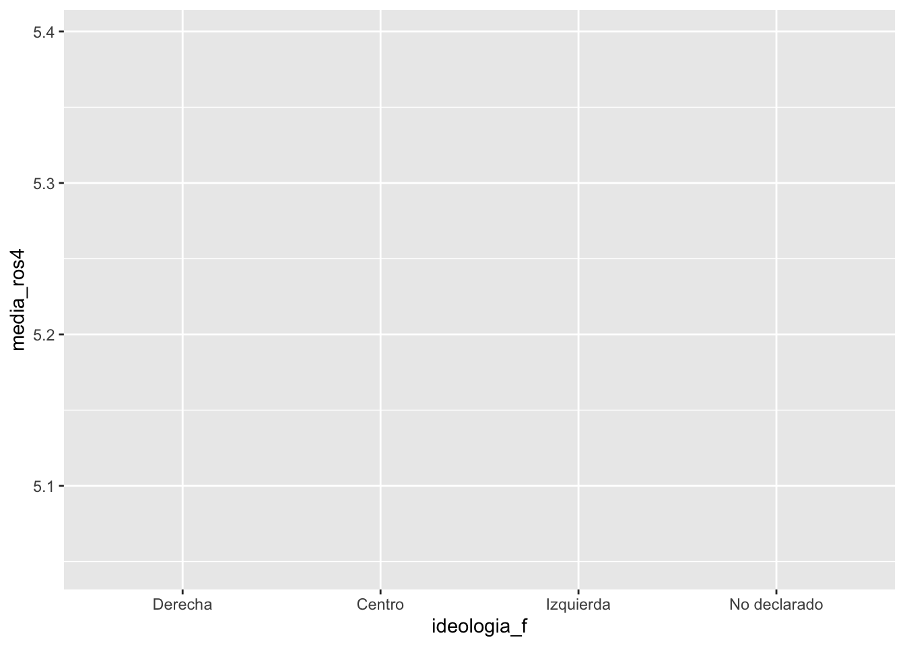
ggplot(data = db_g1,
mapping = aes(x = ideologia_f, y = media_ros4)) + # especificamos datos y mapping
geom_bar(stat = "identity") # agregamos geometria 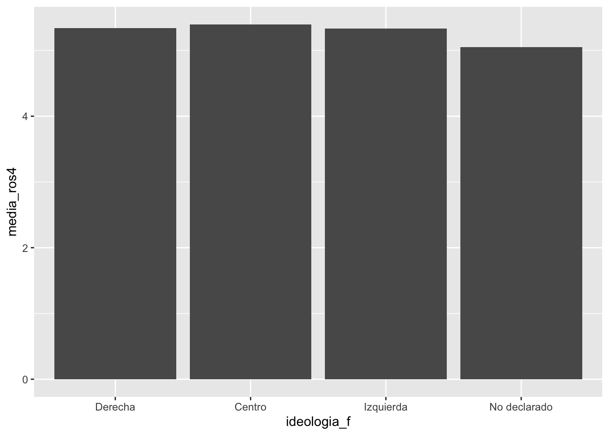
ggplot(data = db_g1,
mapping = aes(x = ideologia_f, y = media_ros4, group = ideologia_f)) + # especificamos datos y mapping
geom_bar(stat = "identity") + # agregamos geometria
geom_errorbar(aes(ymin = ci_inf, ymax = ci_sup), width = 0.2, color = "red") # agregamos intervalo de confianza calculado previamente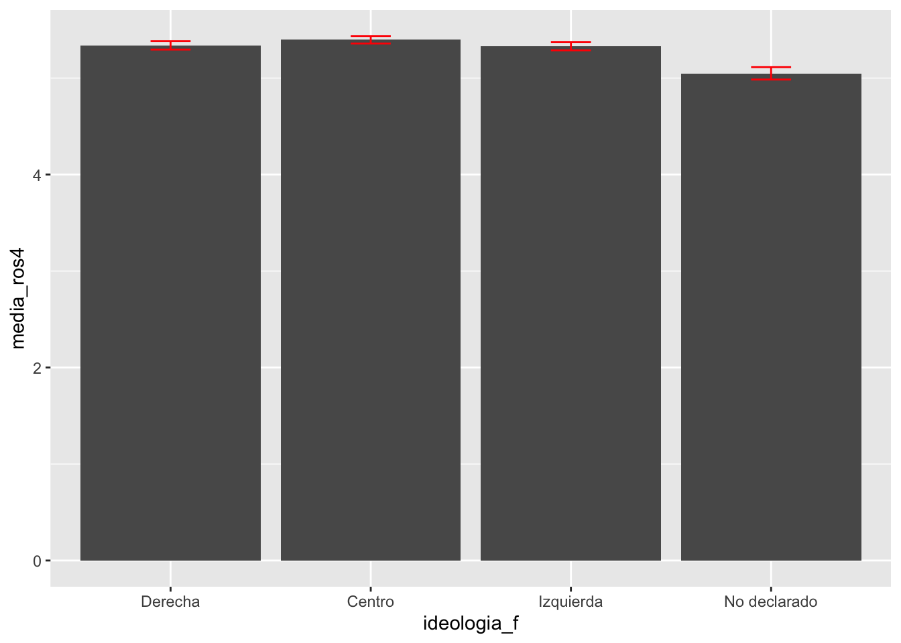
ggplot(data = db_g1,
mapping = aes(x = ideologia_f, y = media_ros4, group = ideologia_f)) + # especificamos datos y mapping
geom_bar(stat = "identity") + # agregamos geometria
geom_errorbar(aes(ymin = ci_inf, ymax = ci_sup), width = 0.2, color = "red") + # agregamos intervalo de confianza calculado previamente
scale_y_continuous(limits = c(0,7), n.breaks = 7) # agregamos escala en eje Y y ponemos limites minimos y maximos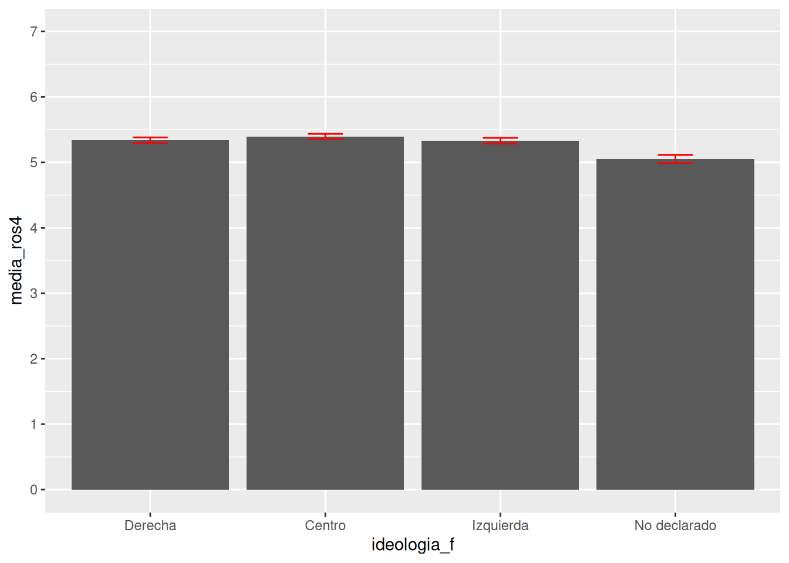
ggplot(data = db_g1,
mapping = aes(x = ideologia_f, y = media_ros4, group = ideologia_f)) + # especificamos datos y mapping
geom_bar(stat = "identity") + # agregamos geometria
geom_errorbar(aes(ymin = ci_inf, ymax = ci_sup), width = 0.2, color = "red") + # agregamos intervalo de confianza calculado previamente
scale_y_continuous(limits = c(0,7), n.breaks = 7) + # agregamos escala en eje Y y ponemos limites minimos y maximos
geom_text(aes(label = round(media_ros4,2)), vjust = 1.5, colour = "white") # agregamos los valores de la media para cada barra/grupoggplot(data = db_g1,
mapping = aes(x = ideologia_f, y = media_ros4, group = ideologia_f)) + # especificamos datos y mapping
geom_bar(stat = "identity", color = "black", fill = "steelblue") + # agregamos geometria
geom_errorbar(aes(ymin = ci_inf, ymax = ci_sup), width = 0.2, color = "red") + # agregamos intervalo de confianza calculado previamente
scale_y_continuous(limits = c(0,7), n.breaks = 7) + # agregamos escala en eje Y y ponemos limites minimos y maximos
geom_text(aes(label = round(media_ros4,2)), vjust = 1.5, colour = "white") + # agregamos los valores de la media para cada barra/grupo
labs(title ="Media de preferencia por la redistribución según ideología política",
x = "Ideología política",
y = "Media",
caption = "Fuente: Elaboración propia en base a LAPOP 2018.") + # agregamos titulo, nombres a los ejes y fuente
theme_bw() # especificamos tema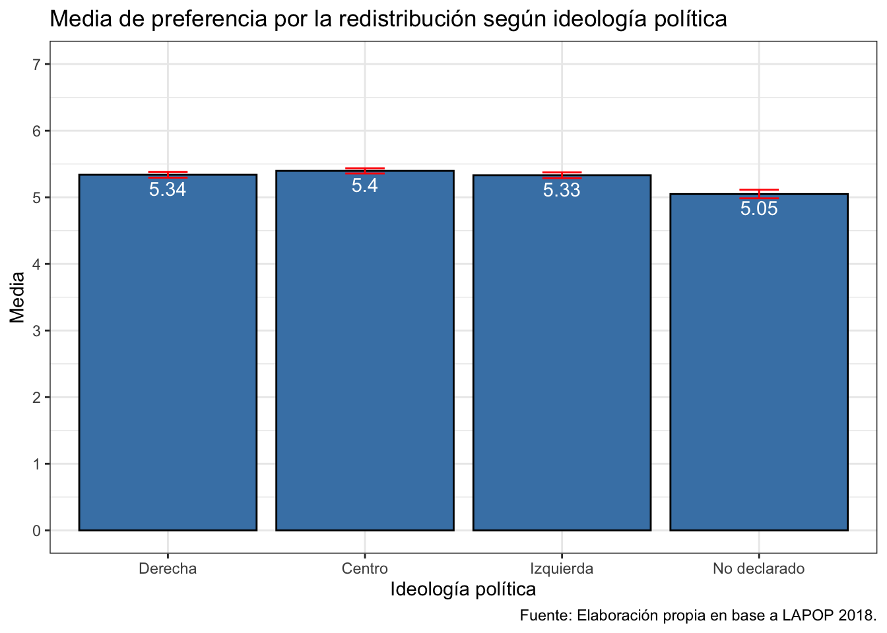
b) Asociación entre continuas
Evaluemos cómo se asocian la preferencias por la redistribución de los países con su nivel de desigualdad económica.
Con ggplot2
db_g2 <- lapop %>%
group_by(pais) %>%
summarise(cm_ros4 = mean(ros4, na.rm = T),
cm_gini = mean(gini, na.rm = T)) %>%
ungroup()
head(db_g2)
## # A tibble: 6 × 3
## pais cm_ros4 cm_gini
## <chr> <dbl> <dbl>
## 1 ARG 5.43 41.1
## 2 BOL 4.72 44.6
## 3 BRA 5.43 53.3
## 4 CHL 5.69 44.4
## 5 COL 5.37 49.7
## 6 CRI 6.05 48.3ggplot(data = db_g2,
mapping = aes(x = cm_gini, y = cm_ros4)) # especificamos datos y mapping 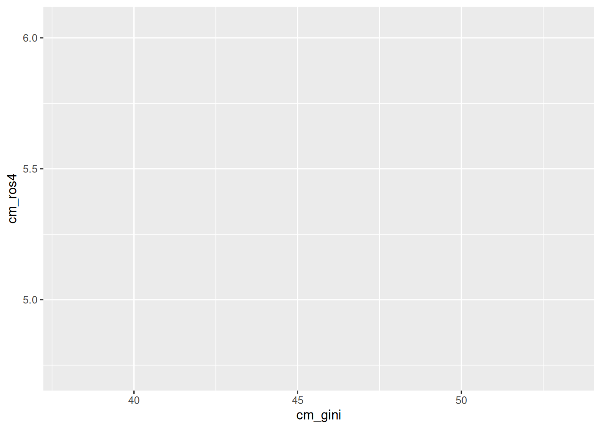
ggplot(data = db_g2,
mapping = aes(x = cm_gini, y = cm_ros4)) + # especificamos datos y mapping
geom_point(size = 3, color = "darkred") # agregamos geometria y color 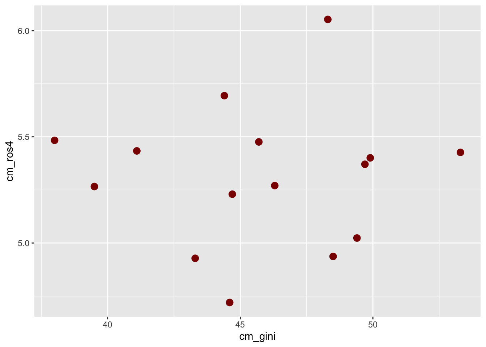
ggplot(data = db_g2,
mapping = aes(x = cm_gini, y = cm_ros4)) + # especificamos datos y mapping
geom_point(size = 3, color = "darkred") + # agregamos geometria y color
geom_smooth(stat = "smooth", position = "identity", method = "lm",
colour = "blue", size = 0.7) # agregamos recta que representa la correlacion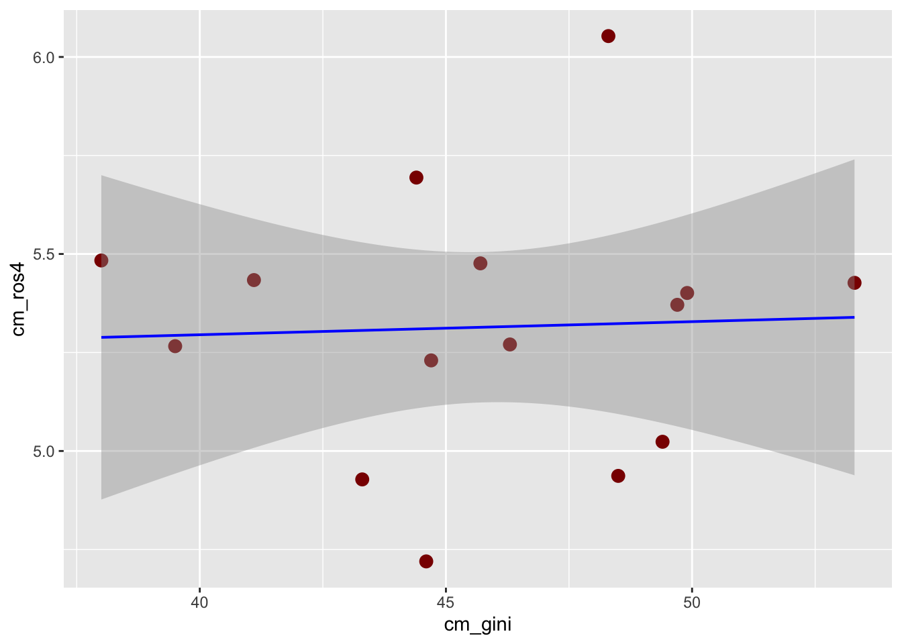
ggplot(data = db_g2,
mapping = aes(x = cm_gini, y = cm_ros4)) + # especificamos datos y mapping
geom_point(size = 3, color = "darkred") + # agregamos geometria y color
geom_smooth(stat = "smooth", position = "identity", method = "lm",
colour = "blue", size = 0.7) + # agregamos recta que representa la correlacion
scale_y_continuous(limits = c(4,6.5), breaks = seq(4,6.5, by = 0.5)) + # agregamos escala en eje Y y ponemos limites minimos y maximos
scale_x_continuous(n.breaks = 7) # agregamos escala eje X para mostrar más valores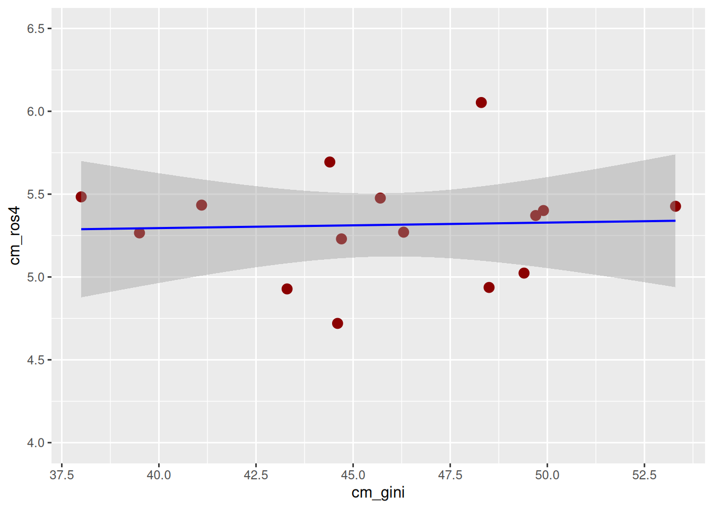
ggplot(data = db_g2,
mapping = aes(x = cm_gini, y = cm_ros4)) + # especificamos datos y mapping
geom_point(size = 3, color = "darkred") + # agregamos geometria y color
geom_smooth(stat = "smooth", position = "identity", method = "lm",
colour = "blue", size = 0.7) + # agregamos recta que representa la correlacion
scale_y_continuous(limits = c(4,6.5), breaks = seq(4,6.5, by = 0.5)) + # agregamos escala en eje Y y ponemos limites minimos y maximos
scale_x_continuous(n.breaks = 7) +# agregamos escala eje X para mostrar más valores
geom_text(aes(label = pais), size = 3, color = "black",
nudge_y = 0.15) # agregamos los valores de la media para cada barra/grupo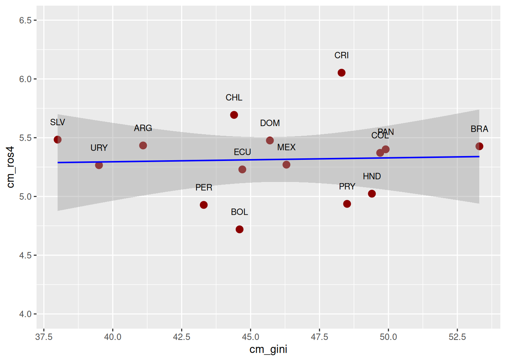
ggplot(data = db_g2,
mapping = aes(x = cm_gini, y = cm_ros4)) + # especificamos datos y mapping
geom_point(size = 3, color = "darkred") + # agregamos geometria y color
geom_smooth(stat = "smooth", position = "identity", method = "lm",
colour = "blue", size = 0.7) + # agregamos recta que representa la correlacion
scale_y_continuous(limits = c(4,6.5), breaks = seq(4,6.5, by = 0.5)) + # agregamos escala en eje Y y ponemos limites minimos y maximos
scale_x_continuous(n.breaks = 7) + # agregamos escala eje X para mostrar más valores
geom_text(aes(label = pais), size = 3, color = "black",
nudge_y = 0.15) + # agregamos los valores de la media para cada barra/grupo
labs(title ="Asociación entre preferencia por la redistribución y desigualdad de los países",
y = "Media preferencias redistributivas",
x = "Índice de Gini",
caption = "Fuente: Elaboración propia en base a LAPOP 2018.") + # agregamos titulo, nombres a los ejes y fuente
theme_bw() # especificamos tema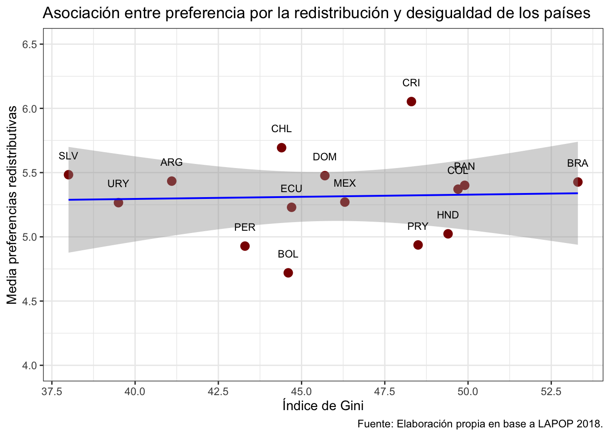
Con ggpubr
db_g2 <- lapop %>%
group_by(pais) %>%
summarise(cm_ros4 = mean(ros4, na.rm = T),
cm_gini = mean(gini, na.rm = T)) %>%
ungroup()
head(db_g2)
## # A tibble: 6 × 3
## pais cm_ros4 cm_gini
## <chr> <dbl> <dbl>
## 1 ARG 5.43 41.1
## 2 BOL 4.72 44.6
## 3 BRA 5.43 53.3
## 4 CHL 5.69 44.4
## 5 COL 5.37 49.7
## 6 CRI 6.05 48.3ggscatter(data = db_g2,
x = "cm_gini",
y = "cm_ros4",
color = "darkred") # agregamos mapping y geometría a la vez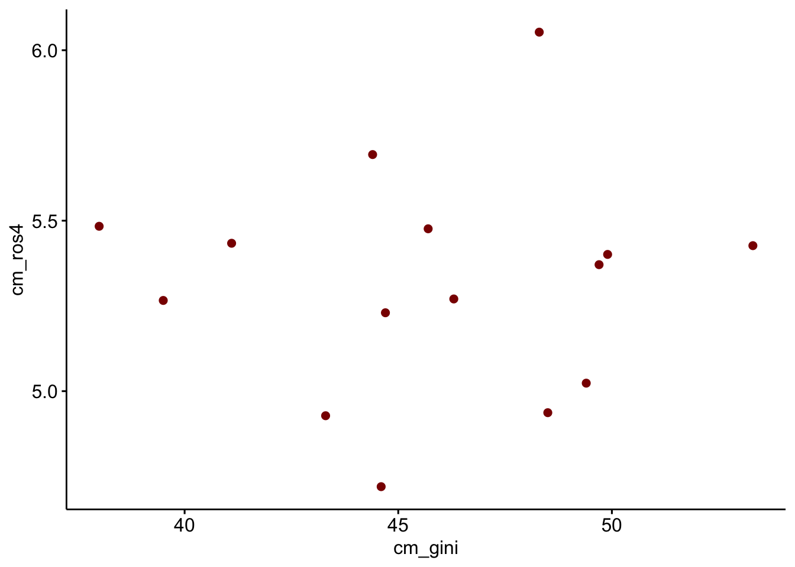
ggscatter(data = db_g2,
x = "cm_gini",
y = "cm_ros4",
color = "darkred",
cor.coef = T, # mostrar coef corr
cor.coef.size = 4, # tamaño texto coef corr
add = "reg.line", # mostrar linea de reg
conf.int = T, # mostrar SE
add.params = list(color = "blue", fill = "lightgray")) # colores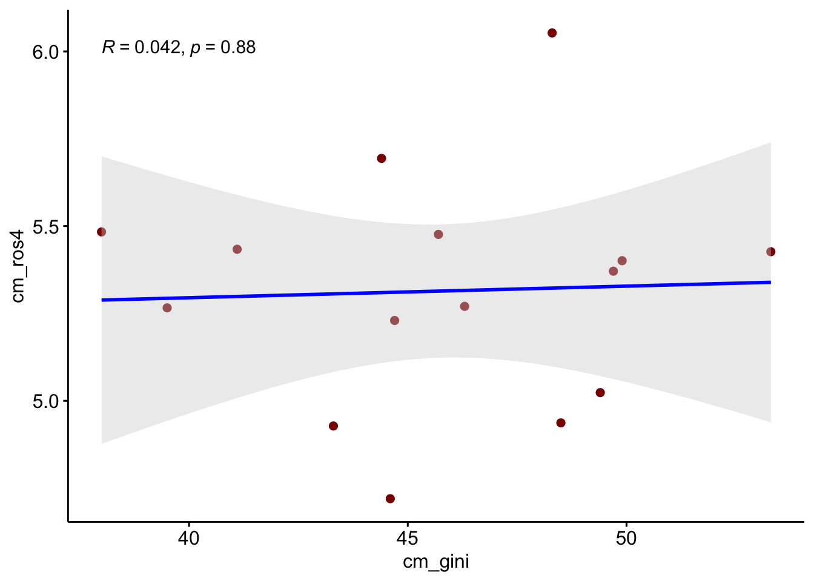
ggscatter(data = db_g2,
x = "cm_gini",
y = "cm_ros4",
color = "darkred",
cor.coef = T, # mostrar coef corr
cor.coef.size = 4, # tamaño texto coef corr
add = "reg.line", # mostrar linea de reg
conf.int = T, # mostrar SE
add.params = list(color = "blue", fill = "lightgray"), # colores
label = "pais",
size = 3,
font.label = c(8, "plain")
)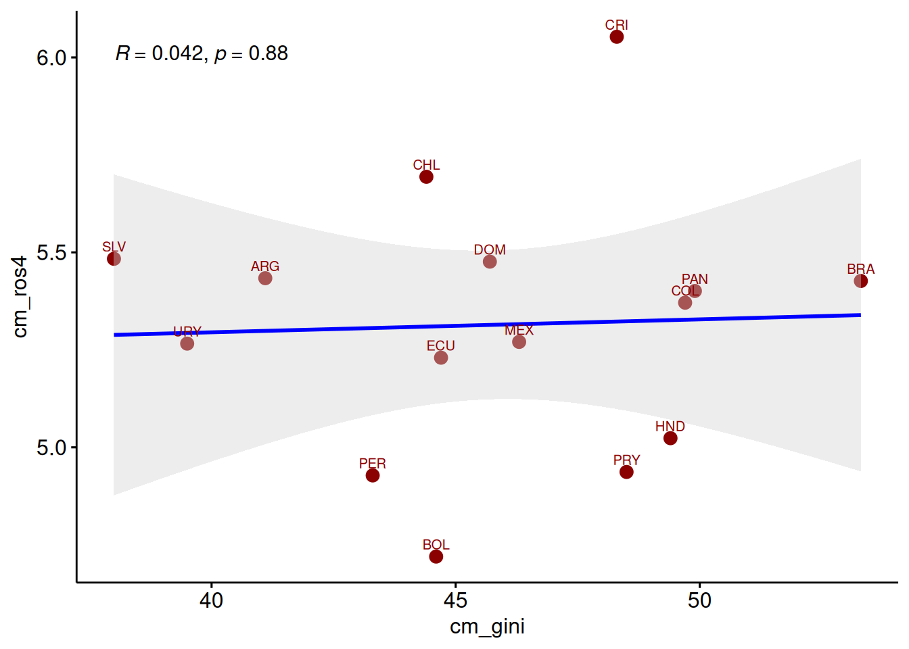
ggscatter(data = db_g2,
x = "cm_gini",
y = "cm_ros4",
color = "darkred",
cor.coef = T, # mostrar coef corr
cor.coef.size = 4, # tamaño texto coef corr
add = "reg.line", # mostrar linea de reg
conf.int = T, # mostrar SE
add.params = list(color = "blue", fill = "lightgray"), # colores
label = "pais",
size = 3,
font.label = c(8, "plain")
) +
labs(title ="Asociación entre preferencia por la redistribución y desigualdad de los países",
y = "Media preferencias redistributivas",
x = "Índice de Gini",
caption = "Fuente: Elaboración propia en base a LAPOP 2018.") + # agregamos titulo, nombres a los ejes y fuente
theme_bw() # especificamos tema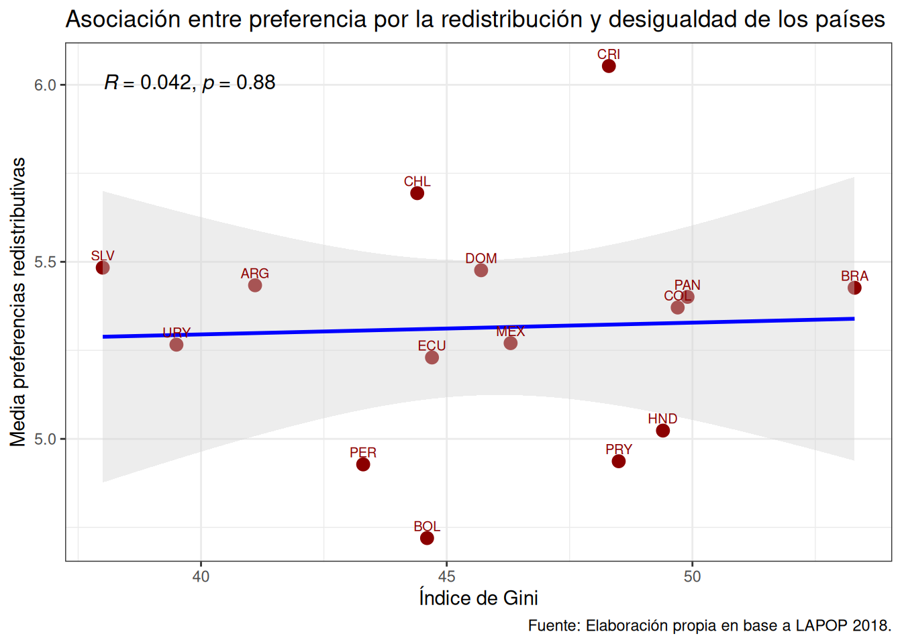
Con sjPlot
db_g2 <- lapop %>%
group_by(pais) %>%
summarise(cm_ros4 = mean(ros4, na.rm = T),
cm_gini = mean(gini, na.rm = T)) %>%
ungroup()
head(db_g2)
## # A tibble: 6 × 3
## pais cm_ros4 cm_gini
## <chr> <dbl> <dbl>
## 1 ARG 5.43 41.1
## 2 BOL 4.72 44.6
## 3 BRA 5.43 53.3
## 4 CHL 5.69 44.4
## 5 COL 5.37 49.7
## 6 CRI 6.05 48.3sjPlot::plot_scatter(data = db_g2,
x = cm_gini,
y = cm_ros4) # agregamos mapping y geometría a la vez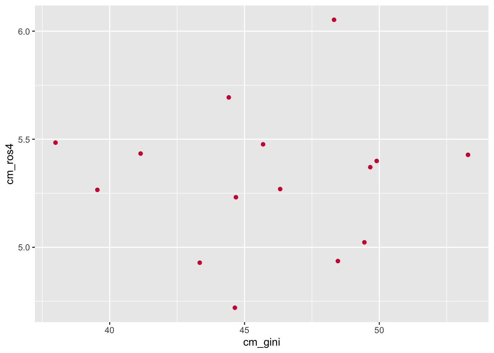
sjPlot::plot_scatter(data = db_g2,
x = cm_gini,
y = cm_ros4,
fit.line = "lm", # mostrar linea de reg
show.ci = T,# mostrar SE
dot.size = 3)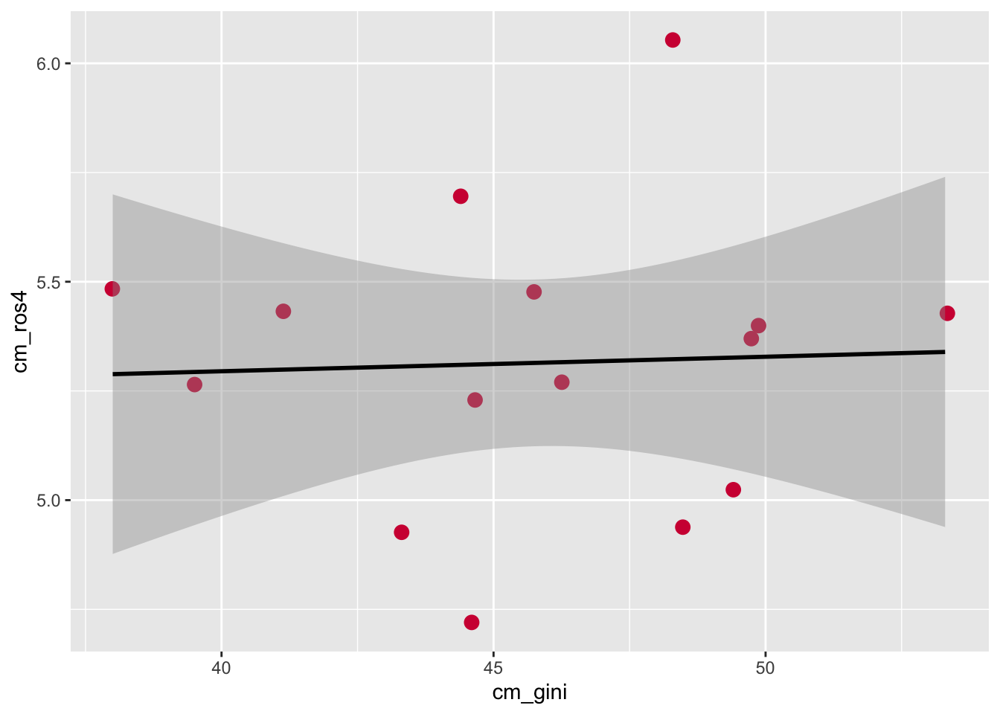
sjPlot::plot_scatter(
data = db_g2,
x = cm_gini,
y = cm_ros4,
fit.line = "lm", # Mostrar línea de regresión
show.ci = TRUE, # Mostrar intervalo de confianza
dot.size = 3,
dot.labels = db_g2$pais # Etiquetas de los puntos
)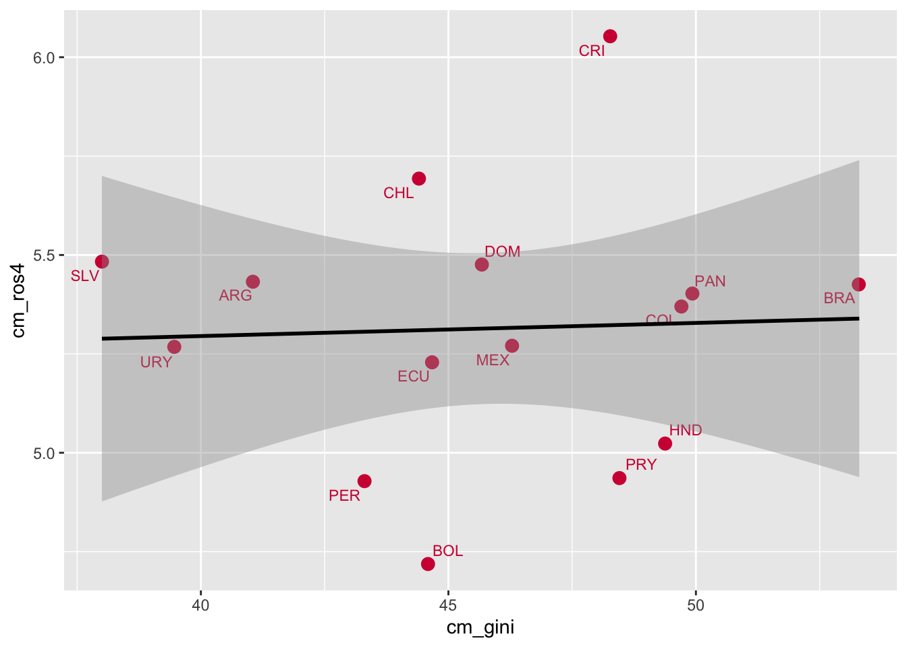
sjPlot::plot_scatter(
data = db_g2,
x = cm_gini,
y = cm_ros4,
fit.line = "lm", # Mostrar línea de regresión
show.ci = TRUE, # Mostrar intervalo de confianza
dot.size = 3,
dot.labels = db_g2$pais # Etiquetas de los puntos
) +
labs(title ="Asociación entre preferencia por la redistribución y desigualdad de los países",
y = "Media preferencias redistributivas",
x = "Índice de Gini",
caption = "Fuente: Elaboración propia en base a LAPOP 2018.") + # agregamos titulo, nombres a los ejes y fuente
theme_bw() # especificamos tema
c) Asociación entre categóricas
Evaluemos la asociación entre la participación en protestas y la ideología política de los individuos.
Con ggmosaic y ggplot2
db_g3 <- lapop %>%
dplyr::select(prot3, ideologia_f) %>%
na.omit()
head(db_g3)
## # A tibble: 6 × 2
## prot3 ideologia_f
## <fct> <fct>
## 1 No Centro
## 2 No No declarado
## 3 No Derecha
## 4 No Centro
## 5 No Centro
## 6 No Centroggplot(data = db_g3) +
geom_mosaic(aes(product(prot3, ideologia_f), fill = ideologia_f)) # agregamos mapping y geometría a la vez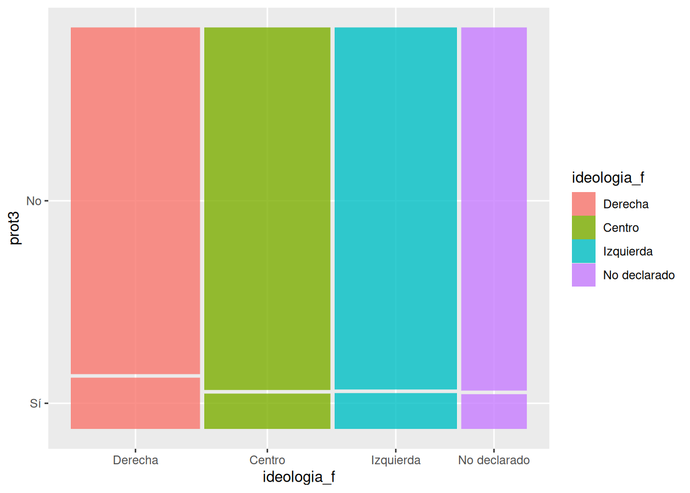
ggplot(data = db_g3) +
geom_mosaic(aes(product(prot3, ideologia_f), fill = ideologia_f)) + # agregamos mapping y geometría a la vez
geom_label(data = layer_data(last_plot(), 1),
aes(x = (xmin + xmax)/ 2,
y = (ymin + ymax)/ 2,
label = paste0(round((.wt/sum(.wt))*100,1),"%"))) # agregamos porcentajes de cada combinación de categórias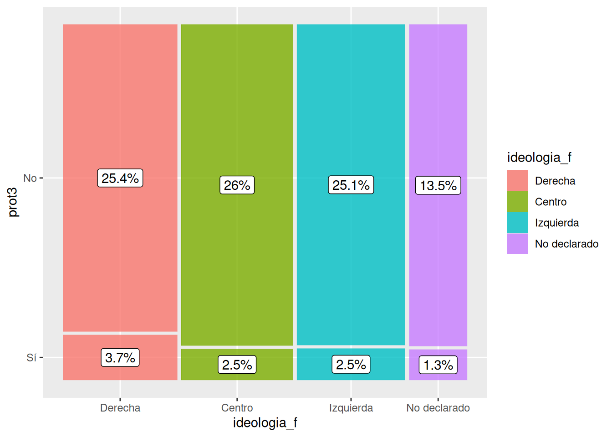
ggplot(data = db_g3) +
geom_mosaic(aes(product(prot3, ideologia_f), fill = ideologia_f)) + # agregamos mapping y geometría a la vez
geom_label(data = layer_data(last_plot(), 1),
aes(x = (xmin + xmax)/ 2,
y = (ymin + ymax)/ 2,
label = paste0(round((.wt/sum(.wt))*100,1),"%"))) +# agregamos porcentajes de cada combinación de categórias
scale_fill_discrete(name = "",
labels = c("Derecha",
"Centro",
"Izquierda",
"No declarado"))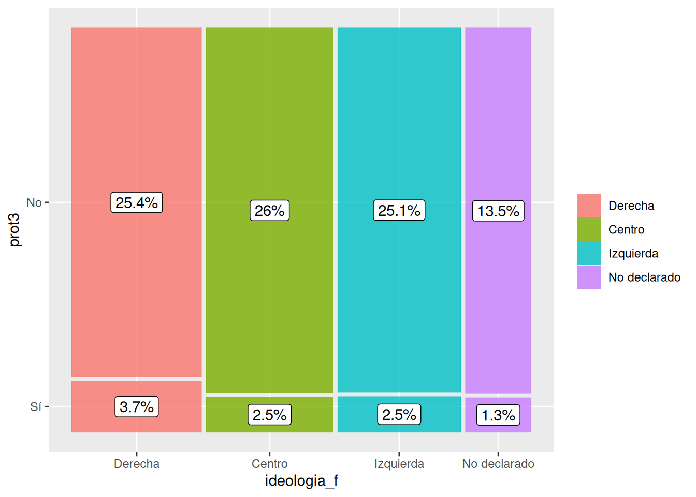
ggplot(data = db_g3) +
geom_mosaic(aes(product(prot3, ideologia_f), fill = ideologia_f)) + # agregamos mapping y geometría a la vez
geom_label(data = layer_data(last_plot(), 1),
aes(x = (xmin + xmax)/ 2,
y = (ymin + ymax)/ 2,
label = paste0(round((.wt/sum(.wt))*100,1),"%"))) +# agregamos porcentajes de cada combinación de categórias
scale_fill_discrete(name = "",
labels = c("Derecha",
"Centro",
"Izquierda",
"No declarado")) +
labs(title ="Asociación entre participación en protestas e ideología política",
y = "Participación protesta",
x = "Ideología política",
caption = "Fuente: Elaboración propia en base a LAPOP 2018.") + # agregamos titulo, nombres a los ejes y fuente
theme_bw() # especificamos tema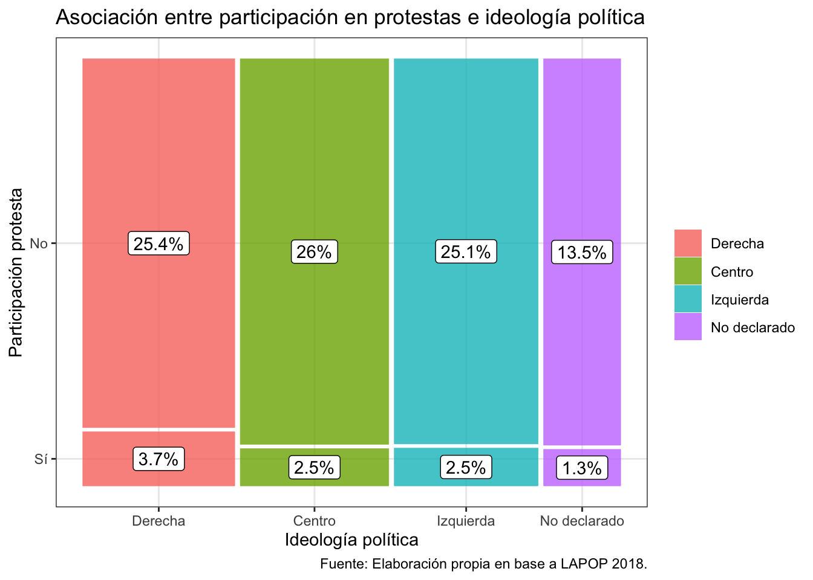
6. Gráficos dentro de Quarto
Una de las ventajas de usar documentos dinámicos con Quarto es que podemos autoreferenciar los gráficos que creamos dentro del mismo documento, además de especificar una serie de propiedades para ajustar la presentación de nuestro gráfico.
Para especificar elementos de presentación de gráficos en un documento Quarto usaremos las opciones de chunks. Algunas de las más comunes son:
label: para especificar el nombre y tipo de elemento, cuando es una figura debemos nombrar al chunk con el prefijofig-antes del nombre respectivofig-align: para espeficiar alineación del gráfico en el documento (left, right, center)out-width: para especificar el tamaño del gráfico en el documentofig-cap: para espeficiar el título del gráfico que se muestra en el documento
¿Cómo las referenciamos? para referenciar tablas o figuras debemos usar el prefijo @ antes del nombre que le dimos al elemento.
Tomemos por ejemplo el siguiente gráfico que muestra el promedio de preferencias redistribuivas (ros4) y del índice de Gini de los países (gini). Esto lo haremos paso por paso.
- Primero, creamos un objeto llamado
g1en donde almacenaremos la información que queremos graficar.
g1 <- lapop %>%
group_by(pais) %>%
summarise(cm_ros4 = mean(ros4, na.rm = T),
cm_gini = mean(gini, na.rm = T)) %>%
ungroup()- Ahora, graficamos esta asociación en un objeto llamado
grafico1.
grafico1 <- ggplot(data = g1,
mapping = aes(x = cm_gini, y = cm_ros4, label = pais)) +
geom_point() +
geom_smooth(method = "lm",colour = "black",fill="lightblue",size=0.5) +
geom_text(aes(label = pais), size = 3, color = "black", nudge_y = 0.05) +
labs(x = "Índice de Gini",
y = "Preferencias redistributivas",
caption = "Fuente: Elaboración propia en base a LAPOP 2018") +
theme_bw()
grafico1
Llamemos a nuestro grafico1, pero ahora especificando en el chunk:
```{r}
#| label: fig-asociacion
#| fig-align: center
#| out-width: '80%'
#| fig-cap: 'Asociación entre Índice de Gini y Preferencias Redistributivas'
#| echo: true
grafico1
```grafico1
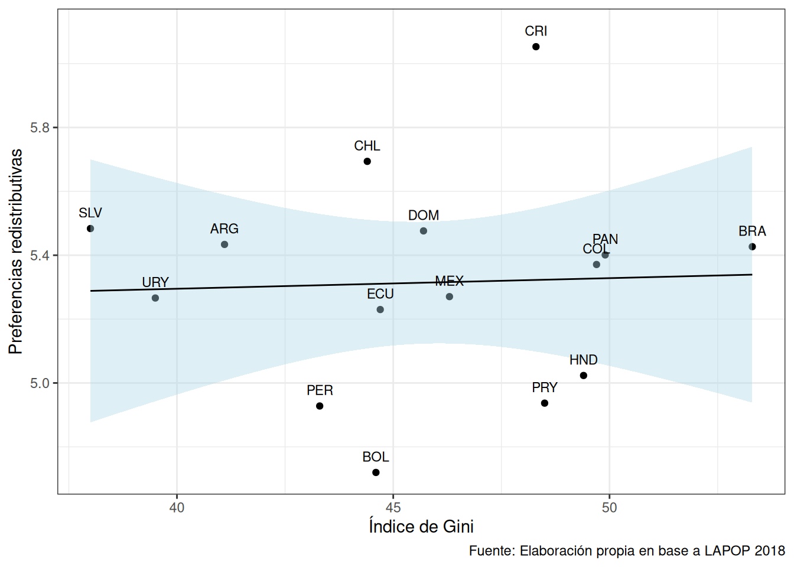
Ahora tenemos un gráfico centrado, más grande y con un título en nuestro documento. Además, podemos llamar a este gráfico usando @fig-asociacion.
Texto de ejemplo:
En la Figura 1 se muestra la asociación entre el promedio de preferencia por la redistribución y el nivel de desigualdad ecónomica de los países.
Resumen
Hoy aprendimos a visualizar y reportar gráficos bivariados en documentos dinámicos con Quarto, así como también a autoreferenciar elementos dentro de un documento qmd. En detalle, aprendímos:
- Generación y presentación de gráficos en Quarto a través de
ggplot2 - Otras opciones de gráficos rapidas para distintos tipos de análisis
- Cómo autoreferenciar elementos dentro un documento Quarto
Más ejemplos de visualización de datos
Referencias
Tufte, E. R. (2001). The Visual Display of Quantitative Information. Graphics Press.